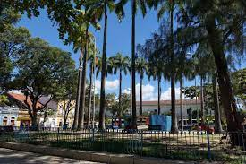
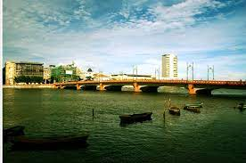

Praça do Arsenal
A Praça do Arsenal é um charmoso espaço público no Recife Antigo, conhecido por seus jardins bem cuidados e arquitetura histórica. É um lugar perfeito para passear e apreciar a atmosfera do centro da cidade.
Ponte Maurício de Nassau
A Ponte Maurício de Nassau é uma das pontes mais famosas do Recife. Ela oferece uma vista deslumbrante do Rio Capibaribe e é especialmente bonita ao entardecer. É um local popular para tirar fotos e apreciar a paisagem.